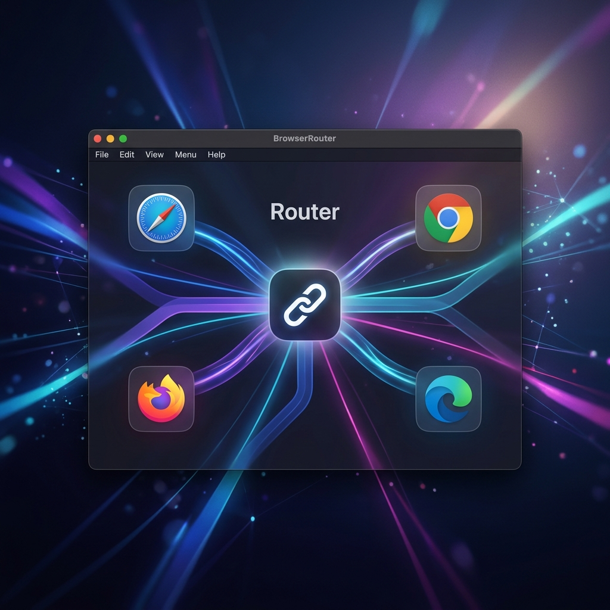

Stop Switching, Start Routing.
The intelligent link dispatcher for macOS. Automatically open links in the right browser or profile based on powerful, custom rules.
Download on GitHub
Open Source

Everything you need to master your workflow.
Smart Rule Engine
Route links based on domains, paths, or even the source application. Work links to Chrome, personal to Safari.
Instant Switcher
Hold a modifier key to pop up a beautiful browser picker. Swift, fluid, and always where your mouse is.
Privacy First
100% open source. No tracking, no data collection. Your browsing habits stay on your machine.
Browser Profiles
Full support for Chrome, Firefox, and Edge profiles. Open work accounts and personal accounts seamlessly.